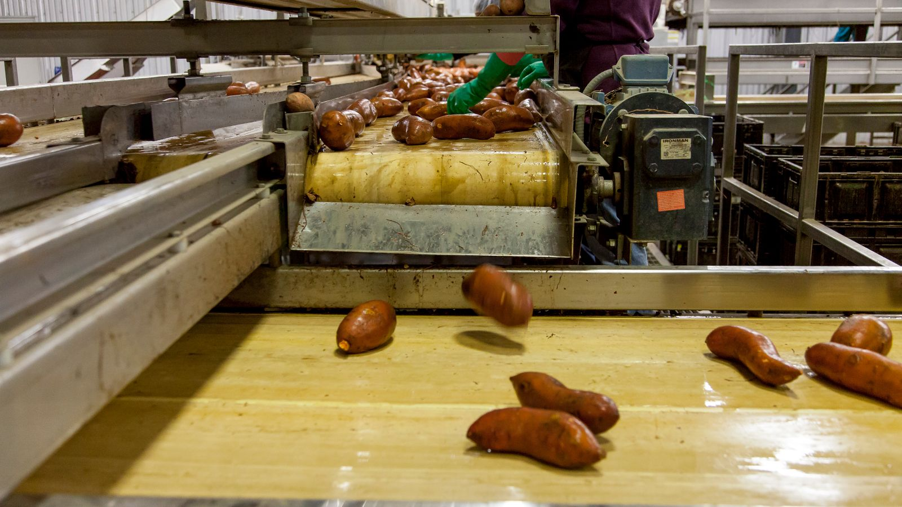

El Reglamento Sanitario de los Alimentos —el Decreto Supremo N° 977 de 1996, conocido simplemente como RSA— es la norma madre de la industria alimentaria chilena: define qué se puede usar, cómo debe rotularse y bajo qué condiciones sanitarias debe producirse cualquier alimento en el país. Durante 2026 acumuló varias modificaciones que elevan el estándar en etiquetado, inocuidad y formulación, y que conviene revisar aunque el destino final del producto sea la exportación.

Qué se actualizó y desde cuándo rige
Las modificaciones de este año no llegaron en un solo paquete, sino de forma escalonada:
- Marzo de 2026 — texto consolidado. El Ministerio de Salud publicó la versión actualizada del Decreto 977/96, que recopila en un solo documento todas las modificaciones vigentes. Para quien trabaja con la norma, es el texto de referencia a usar.
- Abril de 2026 — clasificación de azúcares. Entró en vigencia una precisión sobre cómo deben identificarse y clasificarse los distintos tipos de azúcares en la composición de un alimento.
- Junio de 2026 — fortificación con Vitamina D. Se amplió el plazo para su incorporación en leche blanca y harina, dando a los fabricantes un margen más realista de adecuación productiva.
Por qué la regla de los azúcares importa en la fruta deshidratada
De las tres modificaciones, la de azúcares es la que toca más de cerca a nuestro rubro. La ciruela deshidratada concentra azúcares de forma natural durante el secado —se mueve típicamente entre 18 y 25 grados Brix— sin que se le agregue nada. Una norma que precisa cómo se identifican y declaran esos azúcares obliga a revisar la ficha técnica y el rótulo del producto.
La distinción clave es entre azúcares naturalmente presentes y azúcares añadidos. No son lo mismo ni para el reglamento ni para el comprador, y declararlos de forma imprecisa es el tipo de error que aparece tarde: cuando el producto ya está envasado o cuando un cliente pide la documentación completa.
El reglamento chileno es el piso, no el techo
Aquí conviene ser claro con una confusión frecuente: cumplir el RSA habilita a producir y comercializar en Chile, pero no garantiza el ingreso a ningún mercado externo. Cada destino impone sus propios requisitos, y un producto perfectamente conforme a la norma chilena puede ser rechazado en aduana si no cumple los del país comprador.
China exige registro GACC del establecimiento y codificación en cada envase —lo detallamos en nuestro análisis del protocolo GACC—; la Unión Europea y Estados Unidos aplican sus propios límites de residuos y reglas de rotulación. El exportador termina, en la práctica, cumpliendo dos marcos a la vez.
¿Qué significa esto para el sector? — La mirada de Prunavita
Nuestra recomendación es sencilla y poco glamorosa: revisar ahora la ficha técnica y el rótulo de cada producto, contrastándolos con el texto consolidado de marzo. Es un trabajo de escritorio de unas pocas horas que evita un problema caro más adelante.
Lo hemos visto repetirse: las brechas normativas no se descubren en una revisión tranquila, sino cuando un comprador pide la documentación o cuando llega una auditoría. Una diferencia entre lo que dice el rótulo y lo que exige la norma cuesta mucho menos corregirla en agosto que frente a un auditor o con un contenedor detenido.
Si su planta necesita ordenar este frente —revisión documental, adecuación de rótulos o preparación para una certificación internacional como BRCGS, IFS o FSSC 22000—, es exactamente el trabajo que hacemos en nuestras asesorías técnicas en calidad e inocuidad alimentaria.
Fuentes consultadas: Ministerio de Salud de Chile (texto consolidado del Decreto 977/96) y Adiplus (repaso de actualizaciones 2026). Análisis y redacción: equipo Prunavita.